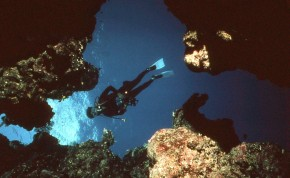
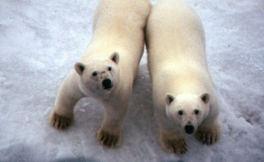
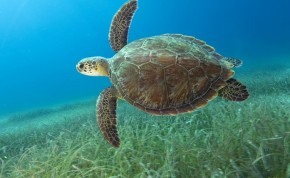
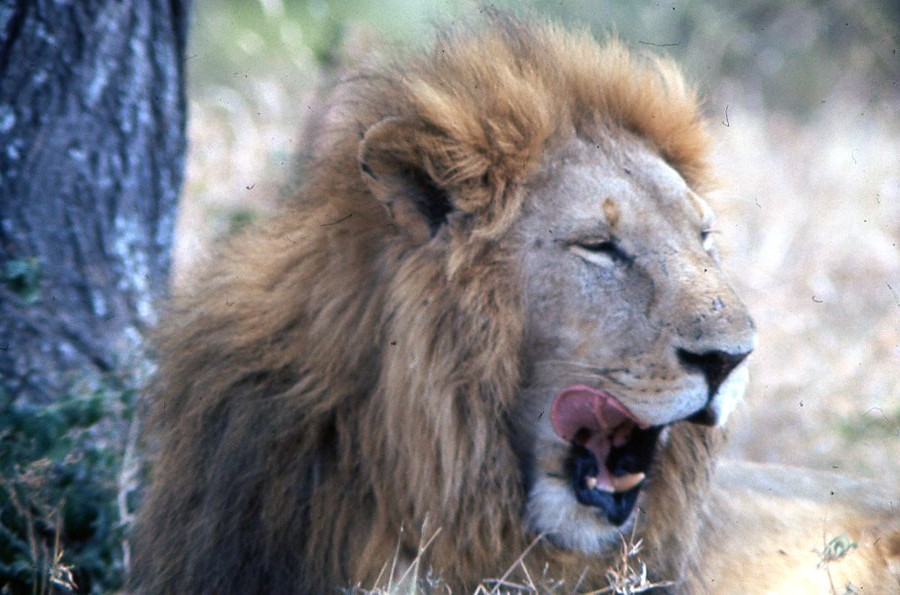
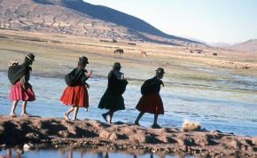
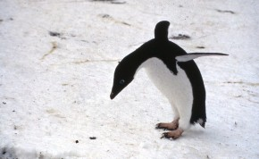

Photo Galleries
Please take a look at some of the photographs I have taken on my travels and adventures! Click on the picture to see the full gallery of images. More will be added soon, so check back for updates.
All photos are the property of Ann McGovern.

ANN’S ADVENTURES: Click on the picture above to see a collection of pictures from Ann’s wonderful adventures!

THE NORTH POLE: Here you’ll find some fun snapshots of my chilly visit to the North Pole!

UNDERWATER CREATURES: Click here for sharks, whales, turtles and other sea creatures I’ve seen.

AFRICAN SAFARI: Marty and I went on a thrilling safari in Africa for two weeks! Click on the picture above to view the gallery of photos from this trip.
YEMEN: Here are some lovely photos from my visit to Yemen. Click the picture above to view the gallery of photos.
NIGERIA & ETHIOPIA: Here are some photographs of the beautiful people of Nigeria and Ethiopia. The first ten were taken in Nigeria. The last six were taken in Ethiopia.

SOUTH AMERICA: Here are some pictures of the people and places I saw on a visit to South America!
CHINA: A collection of photos from my adventures in China! Click on the picture above to view the photo gallery.

ANTARCTICA: Here is a collection of photographs I took on my trip to Antarctica. Click on the photo above to view the gallery.